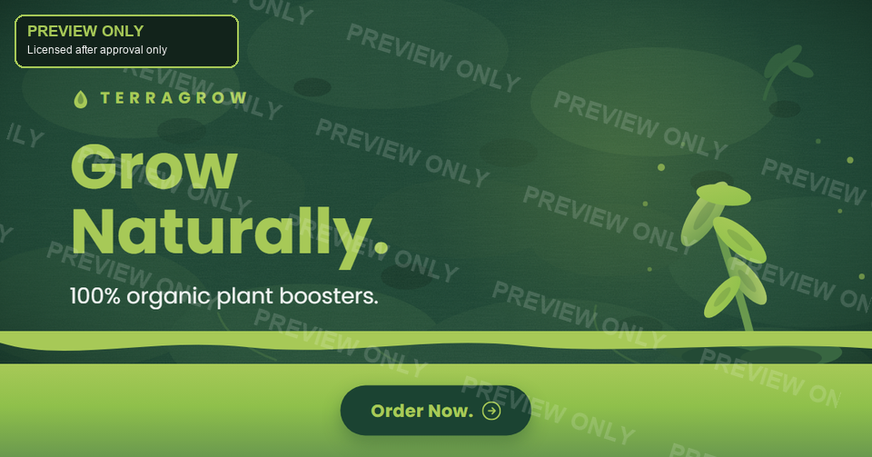

معاينة فقط
معاينة مائية للسرية. ملف الدقة الكاملة يُسلّم للعميل فقط بعد الموافقة.
المهمة
- ✓الترويج لعلامة سماد عضوي (TerraGrow).
- ✓الألوان الدقيقة: #A7C957 · #6A994E · #386641 · #1B4332.
- ✓طباعة Poppins Bold و-Regular.
- ✓النص: "Grow Naturally." · "100% organic plant boosters." · "Order Now."
- ✓خلفية بقية التربة مع منطقة CTA خضراء نابضة بالحياة.
ما تم تسليمه
- ✓صورة PNG بأبعاد 1200×628، دقيقة بالبكسل وجاهزة للرفع.
- ✓耗地 بتربة داكنة طبيعية مبنية بألوان العلامة التجارية.
- ✓برعم أخضر طازج كنقطة بصرية محورية.
- ✓منطقة CTA خضراء نابضة بالحياة مع "اطلب الآن." (نسبة تباين 5.87:1).
- ✓نص عالي التباين، مفحوص حسب معايير WCAG، نسبة نص مناسبة للإعلانات.
- ✓رسالة ملخص التسليم للاستلام.
المنطق التصميمي
في تسويق الزراعة العضوية، التربة هي البطل — فهي ترمز للأصل والنقاء والحياة. في حين يعرض معظم المنافسين ورقة عامة، يقود هذا التصميم بنسيج تربة خصبة يجعل TerraGrow تبدو كالخيار الحقيقي المتجذر.
لوحة الألوان الخضراء تروي بالفعل قصة النمو: من التربة الخصبة الداكنة (#1B4332) إلى النمو الجديد النابض بالحياة (#A7C957). البانر يوجه العين لنفس المسار — تربة → برعم → عنوان رئيسي → CTA — مع منطقة CTA خضراء جريئة تثبّت العين على "اطلب الآن."
النص القصير عالي التباين يبقي الإعلان نظيفاً ويؤدي أفضل على منصة Meta (الصور التي تحتوي أقل من 20% نص تحصل على ترتيب أفضل).
هل تريد بانر مشابه لعلامتك التجارية؟
أرسل briefed — سأرد عليك بخطة واضحة وعرض أسعار احترافي.